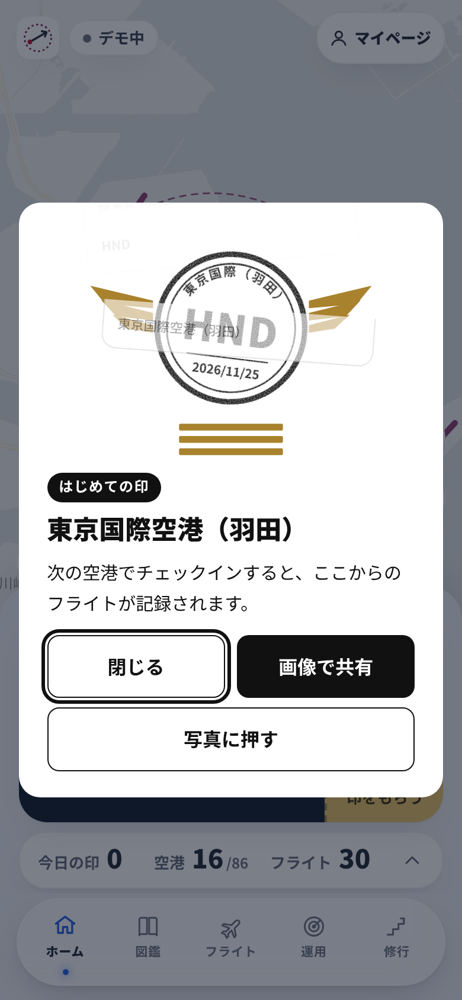

本人が貼った Gemini の案（docs/pm/ext/gemini-stamp-1125.txt）をもとにした画面案です。アプリにはまだ入れません。押すと動き、「もう一度」で最初から。
半券の上にハンコが押され、階級の羽根と帯、名前、ボタン3つ。ダイアログが画面の真ん中に出ます。

今の印の画面（デモの羽田）
地図を薄く残したまま、下から角丸カード。印の場所には今のハンコ（押される動き press と墨の輪 ring もそのまま）。図鑑・共有画像・写真に押すと同じ印のままです。半券は、カードの左右の切り欠きで残します。
今のアプリには「階級」（3・5・20・100・365回で羽根と帯が増える）がすでにあります。縁取りを足すと、節目の見せ方が2つになります。おすすめは「なし」（階級だけ）。
印を新しく「3文字のコード＋滑走路の向きと本数」の絵にします。空港ごとの滑走路の形を86空港ぶん描く必要があり、図鑑や共有画像の印とも見た目が分かれます。
| 時刻 | 動き | そろえたもの |
|---|---|---|
| 0.00 | 地図が薄く暗くなり、カードが下から上がる（行き過ぎない） | micro の 13 シート 0.3秒 |
| 0.20 | ハンコが押される（案A は線が引かれ、コードが落ち着く） | 今の press 0.5秒 |
| 0.48 | 墨の輪が1回広がって消える | 今の ring 0.7秒 |
| 0.70 | 数字が1つ繰り上がり「＋1」、小目標の帯が伸びる | micro の 07・08（0.35〜0.4秒） |
| 0.90 | ボタンが静かに出る | 0.25秒 |
| いつでも | ✕・カードの外・下へなでるで閉じる（0.15秒） | 動きを減らす設定では、最後の形がすぐ出る |